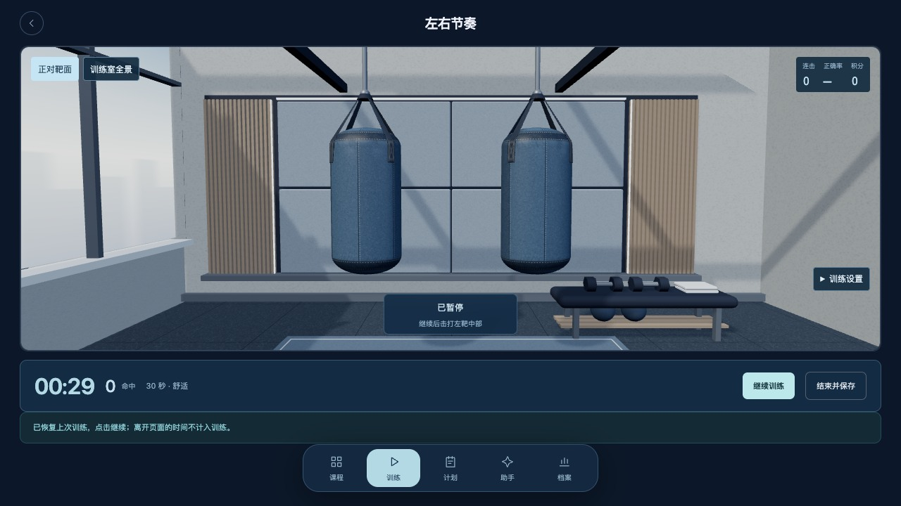

Desktop run and automated tests
Training studio and session recovery
Explore the training studio
Restore a paused checkpoint


These two captures show the same 30-second desktop practice before and after refresh. After refresh, the session is paused until the user selects Continue.
A separate timing test recorded one hit before refresh. After simulating 100 seconds away, the restored timer still reads 7.5 seconds. Resuming and training for another 2.5 seconds produces 10 active seconds.
Retry the original payload
The recovery fixture stores 8 active seconds and 3 hits. Reopening storage preserves the same UUID and all payload fields until the pending save is cleared.
Two submissions, one stored session
201 → 200A separate API test submits the same 30-second, five-hit session twice. The first response creates the record; the retry returns it. History contains one row.
Training suggestions
After at least three comparable sessions, the rule system may suggest one difficulty step or a duration change of up to 20%. The user confirms the adjustment. DeepSeek provides explanations. These desktop tests cover record integrity; headset tracking and training effectiveness require separate evaluation.